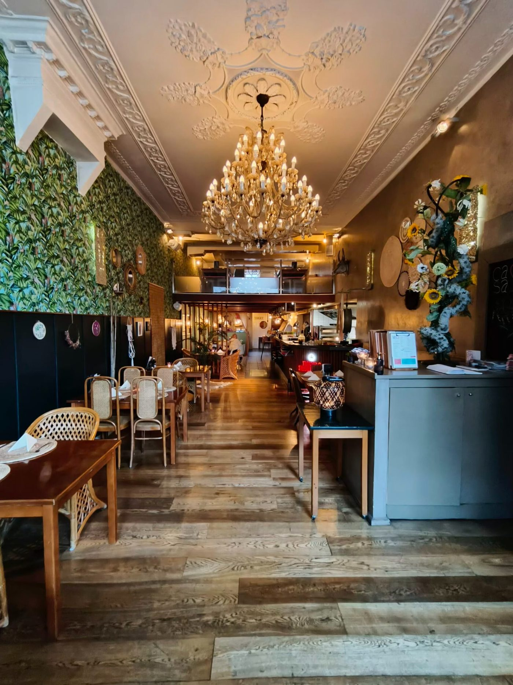
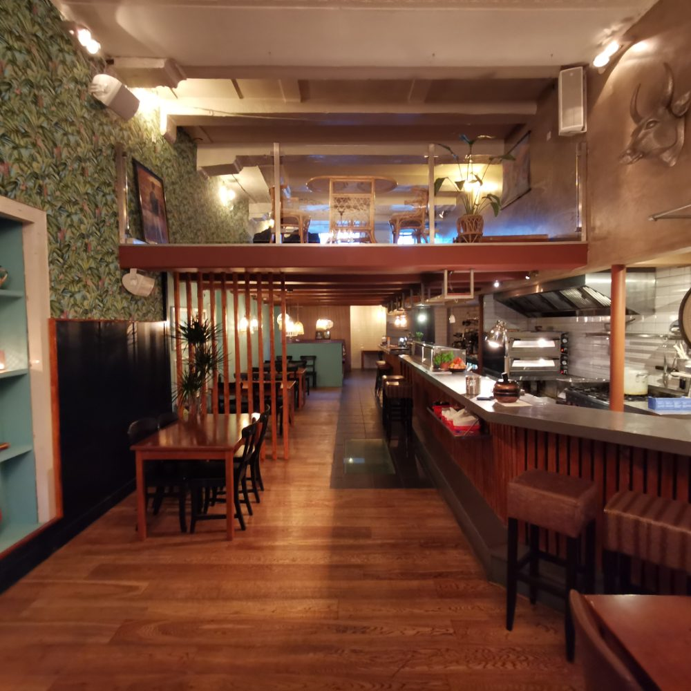
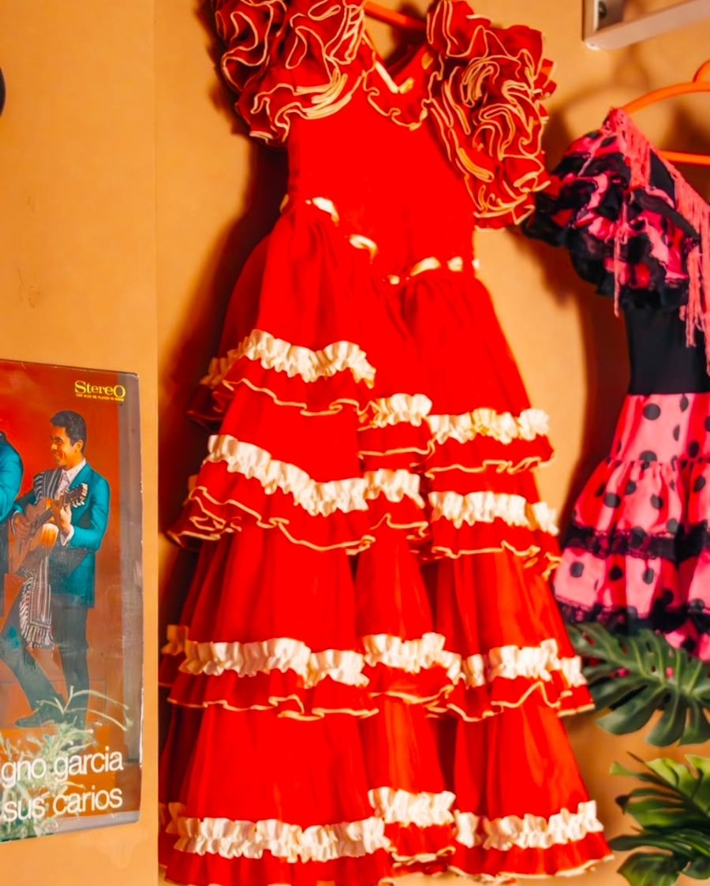
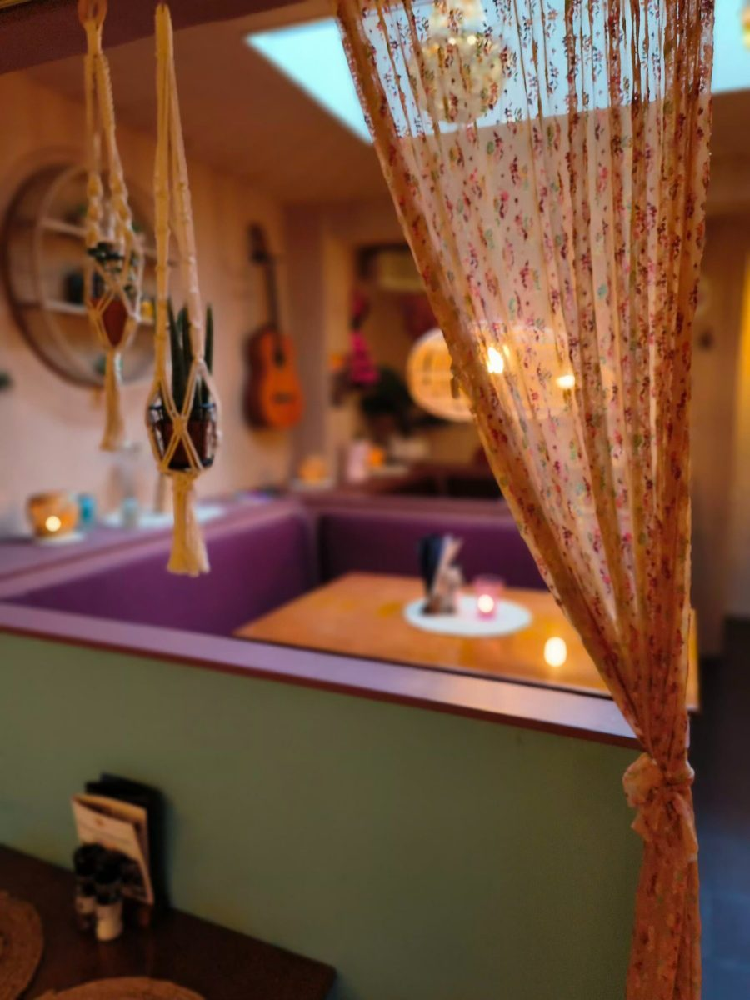
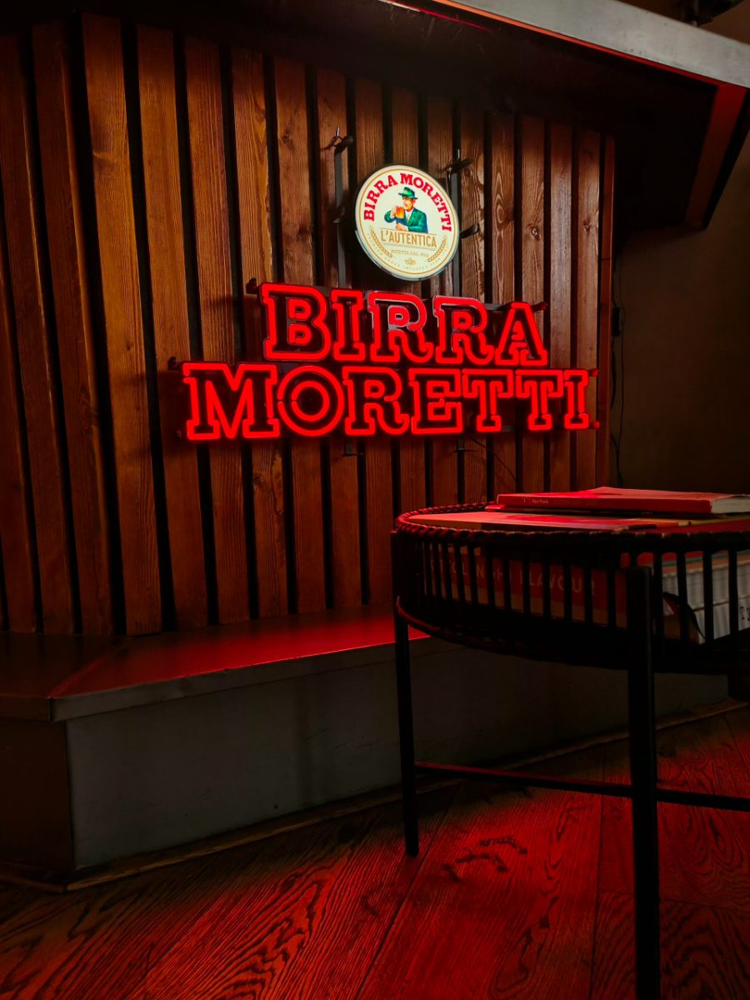
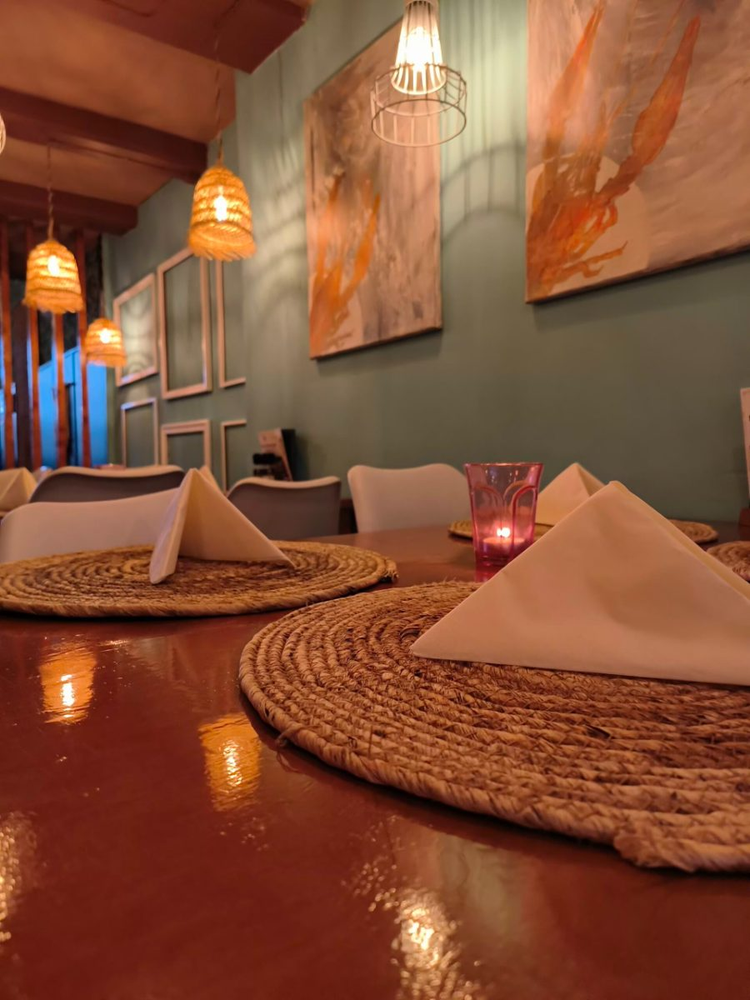

Aan de Roode Steen, Hoorn
Pizza Pasta Paella
Spaanse en Italiaanse keuken midden in het historische centrum van Hoorn, tegenover het Waaggebouw. Warm, gastvrij en gezellig, met een terras op de Roode Steen.
Dit jaar alle kerstdagen open
Laat u deze Kerst door ons verwennen. We hebben een mooi keuzemenu voor u samengesteld met daarop volop fusion tussen de Spaanse en Italiaanse keuken en uiteraard alles vers en huisgemaakt.
Decemberkeuzemenu 42,50 per persoon
Reserveer op tijdWelkom bij Casa 22
Als je binnenkomt voel je het meteen: warmte, gastvrijheid en gezelligheid. Laat de boel even de boel en ruik, hoor, voel en proef onze unieke sfeer.
Geniet van een heerlijke Spaanse of Italiaanse wijn samen met de lekkerste pizza van Hoorn. Ook de pasta en paella zijn met passie bereid en worden zeer vriendelijk geserveerd door de enthousiaste bediening.
- 80 plaatsen binnen
- Terras op de Roode Steen
- Tegenover de Waag, vlakbij het Westfries Museum



Afhalen & bezorgen
Wisten jullie dat wij in coronatijd zijn begonnen met bezorgen en afhalen? We zijn het blijven doen, want het is prima om erbij te doen: een extra service voor onze gasten.
Je kunt je maaltijd ophalen of laten bezorgen. Casa 22 zorgt voor een constante kwaliteit, zodat jij thuis kunt genieten van pizza, pasta of paella.


Feesten en groepen
Het is mogelijk om de gehele locatie af te huren voor een feest of partij. Liever iets kleiners? Reserveer dan alleen de vide voor een intiemer diner met een groep van maximaal 30 personen.
- Hele zaak voor een feest of partij
- De vide voor maximaal 30 personen
Extra informatie vraag je op via de mail.
Mail info@casa22.nlWat gasten zeggen
Een warm familiebedrijf en de nieuwe plek waar ik mijn guilty pleasure "pizza" voortaan ga eten, in een heerlijk tropisch-chique sfeer!
Ze zijn gastvrij, houden van gezelligheid en van goed eten en drinken. Ik voel me erg thuis in Casa 22. Doe mij maar die heerlijke paella!
Ik ben gek op pizza en pasta en Quinten maakt de lekkerste! Maar ook een goeie paella sla ik niet af en ik ben blij dat die nu ook in Hoorn verkrijgbaar is.
Reserveer een tafel
Kies het aantal gasten, de datum en de tijd. Voor last-minute reserveringen kun je ons het beste even bellen.
Open & adres
- Dinsdag t/m vrijdag
- vanaf 17:00
- Zaterdag en zondag
- vanaf 12:00
Lunch op zaterdag en zondag van 12:00 tot 16:00. Dit jaar zijn we alle kerstdagen open.
Casa 22Roode Steen, Hoorn
tegenover het Waaggebouw
0229-757763
info@casa22.nl